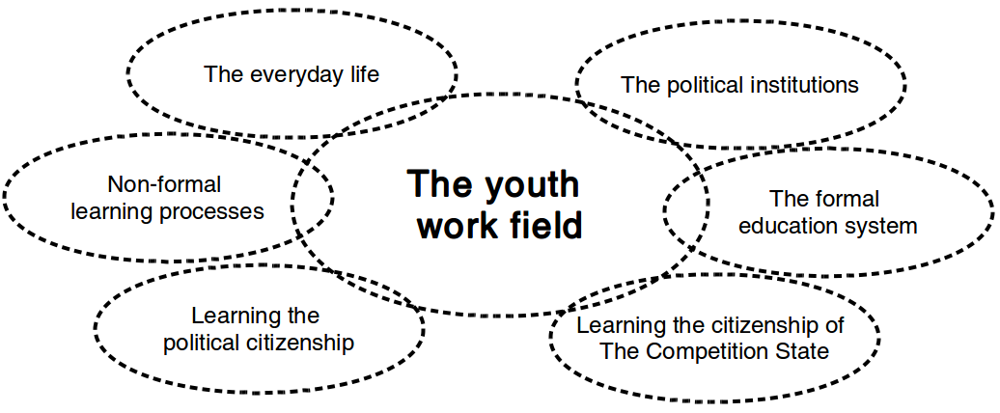

Learning processes in political citizenship
Background of the project

The youth work field as bridge builder?

Research questions
Main question
How can young people and professionals in the youth work field initiate learning processes in political citizenship?
Sub questions
- How is the youth work field constituted?
- Which learning processes in political citizenship is going on in the youth work field?
- How is the political practiced in the life world of young people?
- What can young people and professionals learn from the participation in experiments with learning processes in political citizenship?
- Which structural drivers and barriers exist regarding learning processes in political citizenship?
An example - the production of municipal voters
A depoliticizing of participation in elections?
A delegitimizing of non-participation in elections?

A missing consideration of political inequality?

First time voters turnout in the 2017 municipal election in different areas of Holbæk
The unsecure first time voter
It was only at high school that I gained insight into politics, which is one of the most important in the society we are all part of. But after only a short period of social studies in high school, I do not feel clear yet with my political point of view. and I doubt how to take advantage of my long-awaited chance of democratic participation on November 21.
Some questions
- Who should highlight and explain the local political conflicts?
- What is the objective? A high turnout or reflected citizens?
- Is it possible to give voice to the critique of the political institutions from within the political institutions?